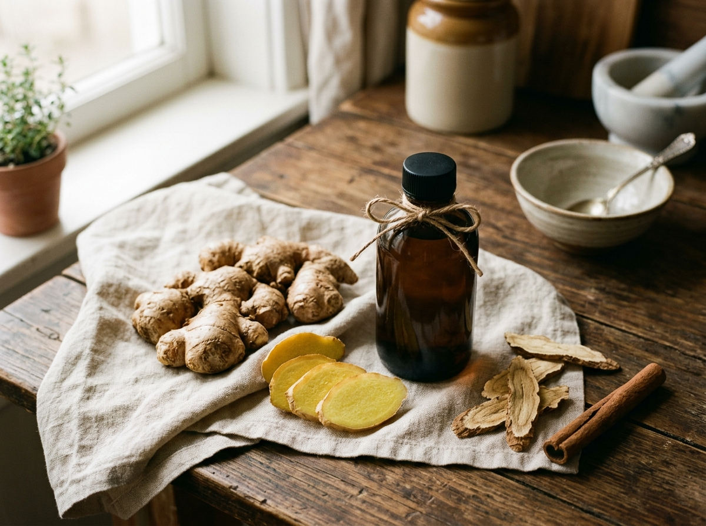

Làm từng mẻ nhỏ · Phường Phố Hiến, Hưng Yên
Mình làm nước cốt gừng xoa bóp theo cách đo đạc cẩn thận, không để lên men chua.
Chào bạn, mình là Hương. Mình làm từng mẻ nhỏ từ gừng sẻ già, xuyên khung, địa liền và thảo mộc tự nhiên, không pha hương liệu hay hóa chất bảo quản.
Mỗi chai có gì, hợp ai, không hợp ai và cần giữ tủ lạnh sau khi mở nắp ra sao mình đều ghi rõ từ đầu để bạn chọn cho đúng nhu cầu nhà mình.

Thực đơn mẻ hiện tại
Chọn theo nhu cầu nhà mình
Nhóm đang thử mẻ · Sắp mở bán
Sổ tay từ bếp
Cách mình giữ chai cốt gừng không lên men
Nhiều chỗ bán hay bảo “cốt gừng sủi bọt xì ga mới là gừng thật”. Thực tế hoàn toàn ngược lại: gừng mọc dưới đất mang rất nhiều nấm men hoang dại, nếu ép xong không tách tinh bột và thanh trùng đúng cách thì chỉ sau 2–3 ngày sẽ lên men chua hỏng.
-
01
Chọn gừng sẻ, gừng dé già 8–10 tháng
Củ già thân chắc, ruột vàng sậm mới nhiều tinh dầu ấm. Mình bẻ tách từng nhánh nhỏ để chà sạch đất trong kẽ, sau đó hấp hơi nóng nhanh rồi hong khô vỏ trước khi ép nên hạn chế hẳn men mốc bám từ đất.
-
02
Lắng bỏ tinh bột trong tủ mát 2–4°C
Ép qua vải lọc mịn rồi cho vào ngăn mát 6–8 tiếng để tinh bột lắng hết xuống đáy. Gạn lấy phần nước vàng trong phía trên giúp thoa lên da thấm êm, không bị bết trắng và không sệt đặc khi đun thanh trùng.
-
03
Đo pH thật, thanh trùng kín 82–85°C
Với dòng không rượu, mình chỉnh pH dưới 3.8 bằng giấm gạo/chanh, đo bằng bút pH rồi đậy kín nắp đun 82–85°C để giữ mùi thơm tươi. Chai thủy tinh luộc tiệt trùng xong rót nóng và lật ngược 3 phút cho sạch cả mặt trong nắp.
-
04
Không chất bảo quản, giữ mát sau mở nắp
Chai chưa khui bạn để chỗ râm mát bình thường. Riêng dòng không rượu sau khi đã vặn nắp, không khí mang men vào nên bạn cất ngăn mát tủ lạnh (2–4°C) và dùng đều trong 3–4 tuần là thơm nhất.
Nhìn nhanh để phân biệt chai đạt chuẩn và chai lên men hỏng
| Quan sát | Chai bị lên men hỏng | Chai làm đúng kỹ thuật |
|---|---|---|
| Chai & nắp | Chai nhựa phồng căng, mở nắp kêu “xì” mạnh, trào bọt khí. | Chai thủy tinh tối màu, nắp kín im, không sủi ga. |
| Mùi hương | Mùi chua như giấm thiu hoặc bỗng rượu hăng gắt. | Thơm ấm mùi gừng già hòa quyện sả, quế, xuyên khung. |
| Độ trong | Đục ngầu, có váng trắng nổi mặt hoặc cặn bột đặc quánh. | Nước vàng trong đồng nhất, không váng mốc. |
| Trên da | Dễ rít dính, có thể châm chích đỏ da do vi sinh tạp. | Ấm sâu êm dịu, thấm đều, không bết trắng da. |
Giải đáp thẳng
Mấy điều mình hay được khách hỏi
Nhắn hỏi trực tiếp
Chưa biết chọn chai nào cứ nhắn mình
Bạn nhắn qua Zalo kể qua tình trạng (dùng sau sinh, đau vai gáy hay ngâm chân buổi tối), mình gợi ý đúng 1 chai hợp nhất, không ép lấy thêm.
- Số Zalo / Điện thoại
- 0989 415 556
- Nơi đóng mẻ
- Phường Phố Hiến, Thành phố Hưng Yên
- Lịch gói & gửi hàng
- Thứ 2 – Thứ 7 (chốt đơn trước 15h)
- Phí giao hàng
- Đồng giá 30.000đ · Miễn ship từ 350.000đ